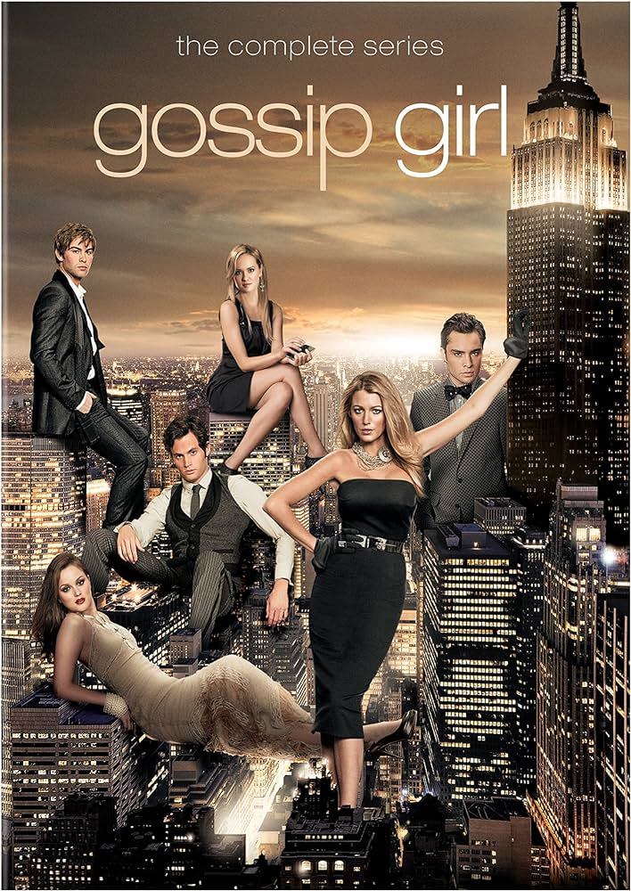
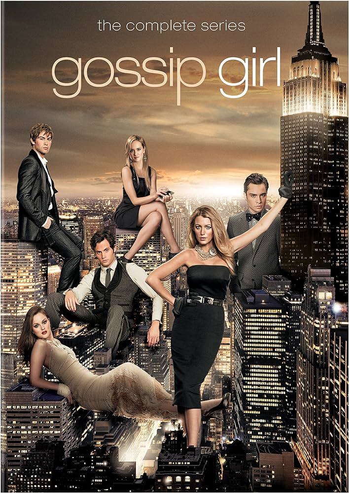
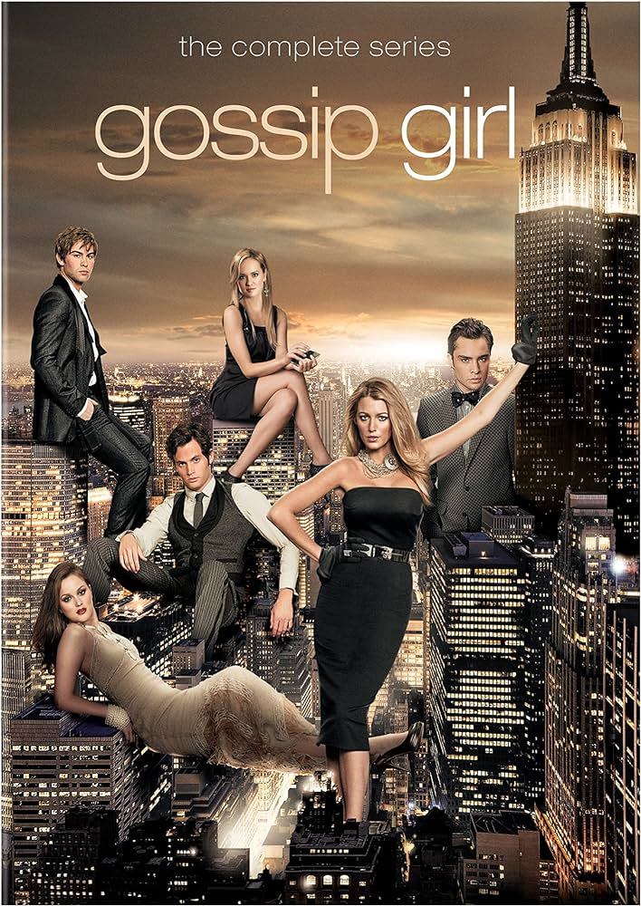

Who's watching?
Ryan
Liza
Kat
Welcome Ryan!
Please swipe through to see your personlized Netflix Page!
Movies
TV shows
"I Swear I'm Going to Watch These"
Welcome Liza!
Please swipe through to see your personal Netflix page!
Movies
TV shows

Current Watch List
Welcome Kat!
Please swipe through to see your personal Netflix page!
Movies
TV shows
Current Watch List


 
